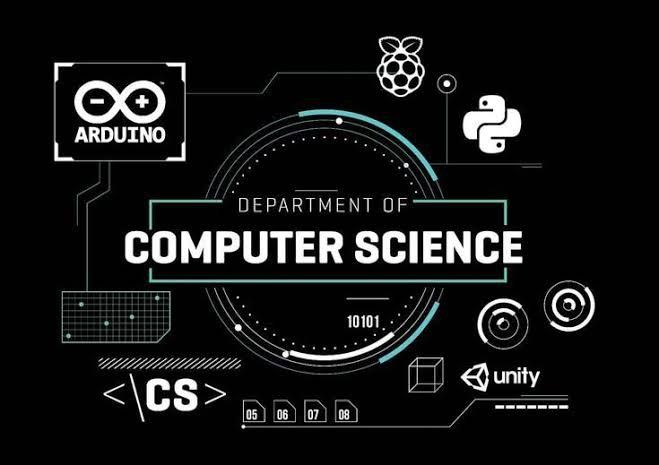

|

|
Introdução à Computação
Entenda os fundamentos da tecnologia!
O que é Introdução à Computação?
É a disciplina que ensina os fundamentos, os conceitos e o funcionamento geral de toda a tecnologia. Ela responde perguntas como:
O que é um computador, de verdade?
Como ele entende o que escrevemos?
O que é informação, dado e programa?
Como tudo isso se conecta e resolve problemas?
Ela é o alicerce: todos os cursos que você tem — Python, Java, Web, Banco de Dados, Redes — são apenas aplicações práticas desses conceitos básicos.
|
O que é Computação e Informação
Computação: é a ciência de estudar, criar e usar sistemas que processam, armazenam e transmitem informações. Não é só sobre máquinas — é sobre resolver problemas usando lógica e regras.
Dado: é um valor bruto (ex: número 25, texto "Maria", imagem). Por si só, não significa nada.
Informação: é o dado organizado, interpretado e útil (ex: "Maria tem 25 anos").
Conhecimento: é usar a informação para tomar decisões ou resolver coisas.
Fato importante: tudo o que um computador faz é transformar dados em informação. O que você aprende em SQL, por exemplo, é só isso: organizar e transformar dados.
|
Como o computador funciona por dentro
Hardware: é a parte física — o que você toca. Placa-mãe, processador, memória, disco rígido, teclado, tela, cabos de rede.
Processador: o "cérebro", que faz cálculos e segue ordens.
Memória: guarda o que está sendo usado agora.
Armazenamento: guarda o que precisa ficar salvo (arquivos, programas).
Software: é a parte lógica — os programas, códigos, sistemas. É o que diz ao hardware o que fazer.
Sistema Operacional (Windows, Linux, Android): o programa principal que controla tudo.
Aplicativos: o que usamos para tarefas específicas (navegador, Python, Excel).
Ligação com seus cursos:
Redes de Computadores: estuda o hardware e software que conectam essas máquinas.
Banco de Dados: é um software especializado em guardar e organizar informações.
|
Como o computador "entende" o que escrevemos?
Os computadores não entendem letras, números ou palavras — eles só entendem dois estados: ligado ou desligado, que chamamos de 0 e 1.
Tudo o que você vê na tela, ouve ou digita é convertido em sequências de 0 e 1.
Cada "pedacinho" é um bit; 8 bits formam um byte (que vale 1 letra ou número).
Python, Java, HTML: todas as linguagens que você aprende servem para traduzir o que nós escrevemos para a linguagem de 0 e 1 que a máquina entende.
|
O que é Lógica de Programação?
É a forma de pensar para resolver problemas — a mesma coisa em qualquer linguagem.
É criar uma sequência de passos claros, sem ambiguidades, para chegar a um resultado.
Exemplo: "Para fazer um café: 1. Pegar copo; 2. Colocar pó; 3. Adicionar água; 4. Mexer."
No seu curso de Python, você aprendeu regras como:
Variáveis (guardar valores)
Condições (se for verdadeiro, faça isso; senão, aquilo)
Laços (repetir uma tarefa várias vezes)
Funções (agrupar passos que servem para várias coisas)
Essa lógica é exatamente a mesma no Java, no Web ou em qualquer outra linguagem. Muda só a forma de escrever, não o raciocínio.
|
Algoritmos: A Receita de Tudo
Algoritmo: é o nome dado à sequência de passos para resolver um problema. Todo programa de computador é um algoritmo.
Exemplo simples: "Somar dois números"
Passo 1: Pegar o primeiro número
Passo 2: Pegar o segundo
Passo 3: Juntar os dois
Passo 4: Mostrar o resultado
No curso de Banco de Dados, os comandos SQL são algoritmos que dizem ao sistema: "Vá lá, pegue esses dados, junte com esses outros e me mostre".
|
Organização da Informação e Arquivos
Ensina como guardar dados: pastas, arquivos, tipos de arquivos (texto, imagem, vídeo).
É a base do que você viu em Python (manipulação de arquivos) e em Banco de Dados (que é uma forma avançada e organizada de guardar dados).
|
Introdução a Redes e Internet
Explica o básico: como computadores se conectam, o que é internet, como a informação viaja de um lugar ao outro.
É exatamente o começo do seu curso de Fundamentos de Redes.
|
|